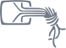

Digital-o-mat
Digitaler Parteien-Check
Digitale Politik in 8 Klicks!
Am 14. Mai wird in Nordrhein-Westfalen ein neuer Landtag gewählt. Was sind die jeweiligen Positionen der Parteien zu wichtigen digitalen Themen?
Einfach die 8 Positionen in unserem Digital-O-Maten für sich selbst bewerten und erfahren, mit welcher Partei die Übereinstimmung wie groß ist.
Digitale Themen kommen in der allgemeinen Wahl-Berichterstattung oft zu kurz. Hier setzt der Digital-O-Mat als zusätzliche Informationsquelle für die Wahlberechtigten an.
Im Frühjahr 2017 haben wir uns an alle Parteien gewandt, die bereits im NRW-Landtag verteten sind oder realistische Chancen haben, dieses Jahr hineingewählt zu werden. Ihnen haben wir eine vorab festgelegte Reihe von aus unserer Sicht wichtigen Fragen zu digitalen Themen gestellt. Wir haben jedoch nicht nur um Antworten gebeten, sondern auch um Belege für die in ihren Antworten enthaltenen Positionen (Partei-Beschlüsse, Initiativen, Wahlprogramme etc.).
Aus den Antworten der Parteien, den Belegen und teils weiteren durch die Parteien übersandten Aussagen ergab sich dann jeweils die Information, wie die Parteien zu den von uns ausgewählten digitalen Themen positioniert sind. Die inhaltlichen Aussagen der Parteien sind am Ende der Auswertung des Digital-O-Maten unter "Die Positionen im Detail" durch Klick auf den Pfeil nach unten nachzulesen. An wenigen Stellen mussten wir aus Relevanzgründen kürzen, was jeweils durch "(...)" kenntlich gemacht wird.
Der Digital-O-Mat wird von einer Gruppe von NGOs zur Verfügung gestellt, die sich mit Netzthemen befassen und für digitale Freiheitsrechte eintreten. Details zu uns siehe "Über uns".
Digitale Themen bei der Landtagswahl 2017 in Nordrhein-Westfalen
Einfach jeweils mit »stimme zu«, »neutral« oder »stimme nicht zu« bewerten und erfahren, wie die Parteien dazu stehen und mit welchen die Übereinstimmung am größten ist:
Über uns
Weitere Informationen über wichtige Entwicklungen rund um digitale Themen und darüber, wie man sich für digitale Bürgerrechte einsetzen kann, gibt es auf den Websites der Kooperationspartner:
Bündnis Freie Bildung
Das Bündnis Freie Bildung ist eine Vereinigung von Organisationen, die die Idee Freier Bildungsmaterialien (Open Educational Resources oder abgekürzt OER) in Gesellschaft und Politik fördern möchten. Dabei sind für uns nur solche Materialien “frei” und “offen”, die der Open Definition genügen.
Chaos Computer Club
Der Chaos Computer Club e. V. (CCC) ist die größte europäische Hackervereinigung und seit über dreißig Jahren Vermittler im Spannungsfeld technischer und sozialer Entwicklungen. Die Aktivitäten des Clubs reichen von technischer Forschung und Erkundung am Rande des Technologieuniversums über Kampagnen, Veranstaltungen, Politikberatung, Pressemitteilungen und Publikationen bis zum Betrieb von Anonymisierungsdiensten und Kommunikationsmitteln.
Digitale Gesellschaft
Digitale Gesellschaft e.V. wurde 2010 gegründet. Die Idee ist, eine kampagnenorientierte Initiative für eine menschenrechts- und verbraucherfreundliche Netzpolitik zu schaffen. Wir wollen auf Erfahrungen aus anderen sozialen Bewegungen wie der Umweltbewegung aufbauen und diese digital weiterdenken. Auf nationaler und europäischer Ebene gibt es zudem eine Vielzahl an Unternehmen und Verbänden, die für ihre jeweiligen Interessen werben. Was bisher allerdings fehlte, ist eine starke Nutzendenvertretung, die sich in aktuelle Gesetzgebungsprozesse einmischt, Stellungnahmen aus Nutzendensicht dazu verfasst und diese Interessen auch bei Anhörungen und in Gesprächen mit Politikern nachdrücklich vertritt. Dafür gibt es nun uns.
Free Software Foundation Europe
Die Free Software Foundation Europe ist ein gemeinnütziger Verein, der Menschen im selbstbestimmten Umgang mit Technik unterstützt. Software ist in allen Aspekten unseres Lebens tief verankert. Es ist wichtig, dass diese Technologie uns hilft, statt uns einzuschränken. Freie Software gibt allen das Recht, Programme für jeden Zweck zu verwenden, zu verstehen, zu verbreiten und zu verbessern. Diese Rechte stärken andere Grundrechte wie die Redefreiheit, die Pressefreiheit und das Recht auf Privatsphäre.
Freifunk
Die freifunk-Community ist Teil einer globalen Bewegung für freie Infrastrukturen und offene Funkfrequenzen. Unsere Vision ist die Demokratisierung der Kommunikationsmedien durch freie Netzwerke. Die praktische Umsetzung dieser Idee nehmen freifunk-Communities in der ganzen Welt in Angriff. Alle Nutzenden im freifunk-Netz stellen ihre WLAN-Router für den Datentransfer der anderen Teilnehmenden zur Verfügung. Im Gegenzug können dann über die Router der anderen dann ebenfalls Daten wie Text, Musik, Filme usw. übertragen oder von Teilnehmenden eingerichtete Dienste genutzt werden, zum Beispiel um zu chatten, zu telefonieren oder gemeinsam Onlinegames zu spielen. Dafür nutzen wir Mesh Netzwerke. Viele stellen zudem ihren Internetzugang zur Verfügung und ermöglichen anderen den Zugang zum weltweiten Netz.
Open Knowledge Foundation Deutschland
Der Open Knowledge Foundation Deutschland e.V. ist der deutsche Zweig der Open Knowledge Foundation, eines weltweit aktiven Netzwerks von Aktivisten, Entwicklern, Policy-Spezialisten und Wissenschaftlern, die sich für die Förderung offenen Wissens und offener Daten einsetzen. Wir verstehen uns als aktiver Teil der deutschen und europäischen Zivilgesellschaft und fördern und stärken die Grundrechte. Besonders setzen wir uns dafür ein, dass Bürgerinnen und Bürger ihre Rechte auch online wahrnehmen können. Freies Wissen hilft Bürgerinnen und Bürgern, sich zu informieren und führt zu einer aufgeklärten Meinungsbildung.
Wikimedia Deutschland e.V.
Wikimedia Deutschland ist ein gemeinnütziger Verein, der sich der Förderung Freien Wissens verschrieben hat und den freien Zugang zu Wissen als Teil eines Grundrechts auf Bildung und Kulturteilhabe versteht. Dafür genügt es nicht, Wissen nur konsumieren zu können. Menschen müssen auch selber Wissen beitragen und formen dürfen. Seit unserer Gründung im Jahre 2004 haben wir deshalb zahlreiche Wikimedia-Projekte unterstützt. Eines der wichtigsten ist die Wikipedia, die freie Online-Enzyklopädie. Ihre Inhalte und die aller anderen Wikimedia-Projekte werden von Freiwilligen erstellt, verbessert und verbreitet. Ein internationales Netzwerk aus Wikimedia-Organisationen hilft ihnen dabei.
Programmierung unterstützt durch
Diensteanbieter
Wikimedia Deutschland – Gesellschaft zur Förderung Freien Wissens e. V.
Tempelhofer Ufer 23/24
10963 Berlin
E-Mail: info@wikimedia.de
Telefon: +49 (0)30-219 15 826-0
Fax: +49 (0)30-219 158 26-9
Geschäftsführender Vorstand: Abraham Taherivand
Eingetragen im Vereinsregister des Amtsgerichts Charlottenburg, VR 23855. Inhaltlich Verantwortlicher gemäß § 55 Abs. 2 RStV: Abraham Taherivand (Anschrift wie oben).
Haftung für Inhalte
Die Inhalte unserer Seiten wurden mit größter Sorgfalt erstellt. Für die Richtigkeit, Vollständigkeit und Aktualität der Inhalte können wir jedoch keine Gewähr übernehmen. Als Diensteanbieter sind wir gemäß § 7 Abs.1 TMG für eigene Inhalte auf diesen Seiten nach den allgemeinen Gesetzen verantwortlich. Nach §§ 8 bis 10 TMG sind wir als Diensteanbieter jedoch nicht verpflichtet, übermittelte oder gespeicherte fremde Informationen zu überwachen oder nach Umständen zu forschen, die auf eine rechtswidrige Tätigkeit hinweisen. Verpflichtungen zur Entfernung oder Sperrung der Nutzung von Informationen nach den allgemeinen Gesetzen bleiben hiervon unberührt. Eine diesbezügliche Haftung ist jedoch erst ab dem Zeitpunkt der Kenntnis einer konkreten Rechtsverletzung möglich. Bei Bekanntwerden von entsprechenden Rechtsverletzungen werden wir diese Inhalte umgehend entfernen.
Haftung für Links
Unser Angebot enthält Links zu externen Webseiten Dritter, auf deren Inhalte wir keinen Einfluss haben. Deshalb können wir für diese fremden Inhalte auch keine Gewähr übernehmen. Für die Inhalte der verlinkten Seiten ist stets der jeweilige Anbieter oder Betreiber der Seiten verantwortlich. Die verlinkten Seiten wurden zum Zeitpunkt der Verlinkung auf mögliche Rechtsverstöße überprüft. Rechtswidrige Inhalte waren zum Zeitpunkt der Verlinkung nicht erkennbar. Eine permanente inhaltliche Kontrolle der verlinkten Seiten ist jedoch ohne konkrete Anhaltspunkte einer Rechtsverletzung nicht zumutbar. Bei Bekanntwerden von Rechtsverletzungen werden wir derartige Links umgehend entfernen.
Urheberrecht
Sofern nicht anders angegeben und mit Ausnahme der hier verwendeten Logos, stehen die Inhalte dieser Seite unter Creative-Commons-Lizenz Namensnennung 4.0 International (CC BY-SA 4.0). Die Software des Digital-O-Maten wurde entwickelt von Data Science & Stories und ist verfügbar unter MIT License auf GitHub.
“Digitalomat Logo” By ElioQoshi (Own work) CC BY-SA 4.0, via Wikimedia Commons; Icomoon Free by KeyaMoon (CC BY 4.0); Entypo+ by Daniel Bruce (CC BY-SA 4.0); Open Sans (Apache License 2.0); Raleway (SIL OFL 1.1); Zepto.js (MIT License); Mustache.js (MIT License).
{kind=link}
Datenschutzerklärung
Personenbezogene Daten werden auf dieser Webseite nur im technisch notwendigen Umfang erhoben. In keinem Fall werden die erhobenen Daten verkauft oder aus anderen Gründen an Dritte weitergegeben. Im Folgenden erhalten Sie einen Überblick über die von uns im Rahmen dieser Website erhobenen Daten.
Log-Files
Bei der Nutzung dieses Angebots werden die von Ihrem Browser an den Server übermittelten Daten erfasst und gespeichert. Dies umfasst üblichweise Informationen über den Typ und die Version des von Ihnen verwendeten Browsers, das verwendete Betriebssystem, die Referrer URL (die Webseite, von der aus Sie zu dieser Website gelangt sind), den Hostnamen des zugreifenden Rechners (die IP Adresse) sowie die Uhrzeit der Serveranfrage. In der Regel lassen sich diese Daten nicht bestimmten Personen – und damit auch nicht Ihnen – zuordnen. Weder wird zu diesem Zweck ein Abgleich der Daten mit anderen Daten vorgenommen, noch werden sie hierfür mit anderen Daten zusammengeführt. Die Daten werden regelmäßig nach einer statistischen Auswertung gelöscht. Ihre inhaltliche Auswahl zu den Positionen des Digital-O-Maten wird nicht an den Server zurück übermittelt, vielmehr läuft der Digital-O-Mat einschließlich der Auswertung vollständig im Arbeitsspeicher Ihres Endgeräts. Entsprechend sind für uns weder individuelle noch aggregierte Analysen der Präferenzen möglich.